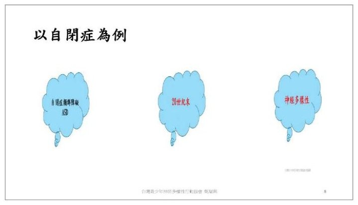
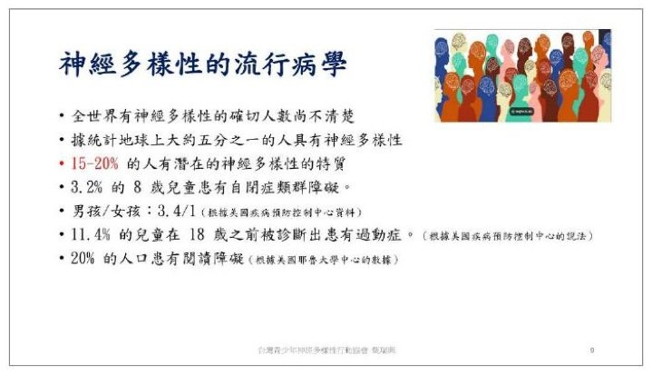
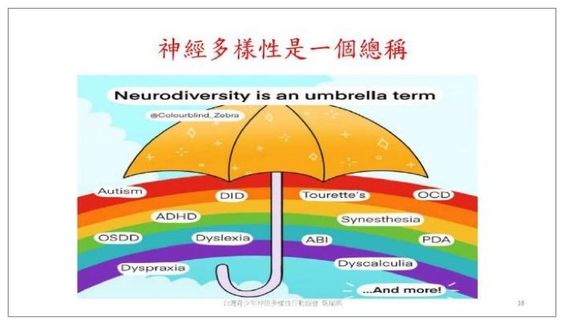
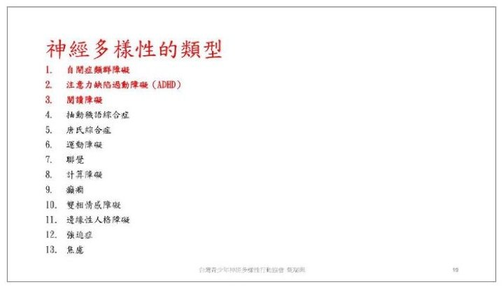

第 1 場・
神經多樣性的概念與演化
Neurodiversity — An Evolution of the Concept
Dr. Raymond Sui-Hing Yan 甄瑞興醫師
台灣青少年神經多樣性行動協會理事長暨亞東紀念醫院兒少神經多樣性共照中心主任
本場未錄音，依大會手冊與投影片整理。
神經多樣性不是一種病，是一個總稱——底下的才是真正的診斷。
第一場從一個詞的來歷講起：神經多樣性不是醫學診斷，而是一個總稱。底下的自閉症類群障礙、注意力不足過動與閱讀障礙才是臨床診斷。投影片一路帶到十三種類型、十大警訊與常見共症，最後落在共照中心與生活陪跑師課程。
重點整理
01神經多樣性不是一個診斷

- 投影片從詞源講起：神經多樣性一詞最早於 1998 年由美國記者布盧姆提出，同年也出現在澳洲社會學家辛格的論文裡。
- 投影片寫明：神經多樣性不是一個醫學診斷，而是一個比較平等、包容及多樣性的稱謂。
- 它用失智症候群比喻：失智症候群是大雨傘，阿茲海默症才是臨床診斷；神經多樣性同樣是總稱，自閉症、過動症、閱讀障礙才是診斷。
02一個孩子的自白，五分之一的人

- 接著是一位青少年「小洋」的第一人稱自白：不知道自己需要交朋友、對食物的質地與味道感到困惑、對變化不知所措。
- 另一頁寫下自閉症這個稱謂帶來的羞恥感、感官過載，以及多年來把情緒藏起來。
- 流行病學那頁寫：全球確切人數不清楚，估計約五分之一的人具有神經多樣性；旁邊並列台灣青中壯世代自殺死亡率創新高的剪報。
03神經典型與神經多樣

- 這幾頁把人群分成神經典型與神經多樣兩類，並寫明神經多樣性者並非都有病。
- 神經典型指的是大腦在功能、行為與處理上被認為落在標準範圍內的人，他們通常不會質疑自己的大腦怎麼運作。
- 投影片列出六項不同：思考、感知、行動、溝通與社交方式，以及可能需要日常生活的幫忙，並用一張彩虹傘圖說明它是總稱。
04十三種類型，十大警訊

- 投影片列出十三項類型，前三項標紅：自閉症類群障礙、注意力缺陷過動障礙、閱讀障礙。
- 十大警訊包括：執行功能、注意力調節、工作記憶、社交溝通、感官敏感、情緒調節、僵硬思維、語言學習、運動協調與重複行為。
- 後面幾頁展開三種狀況：自閉症光譜差異極大、沒有單一正確的支持方式；過動分成三型；閱讀障礙者常擅長視覺與空間。
現場問答
本場無現場問答記錄。
帶走的一句
神經多樣性不是一個醫學診斷，而是一個比較平等、包容及多樣性的稱謂。